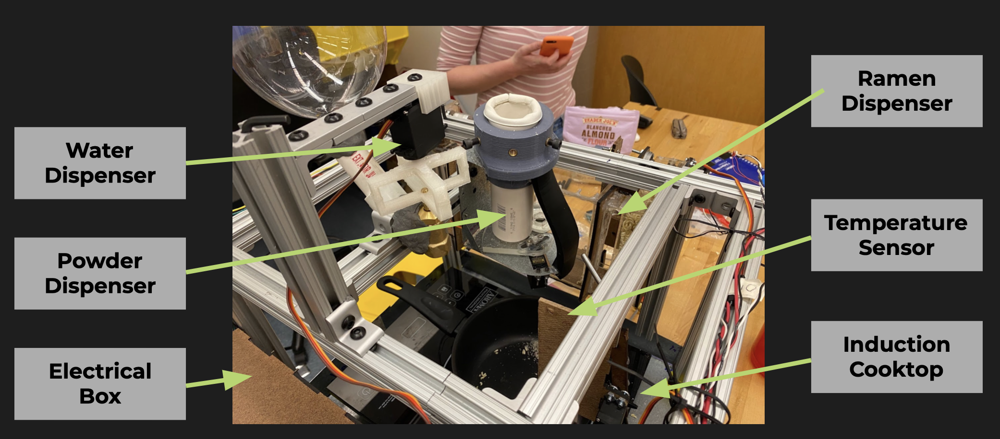

Mechanical Breakdown
The main mechanical components in the project could be broken down into three main components: the ramen dispenser, the powder dispenser, and the water dispenser. All three work in conjunction with the hot plate and the temperature sensor to make a bowl a ramen.
Mechanical Schematic
Ramen Dispenser

The mechanical design of the noodle dispenser stayed fairly constant over the course of the development, undergoing one major change from holding a single block of noodles to holding up to eight.
The main change the mechanical work on the noodle dispenser underwent was in fabrication,
as it transitioned from being made of bent and cut sheet metal to being made of hot
glued acrylic and MDF. A significant amount of work was put into making the mechanism food
safe, as the only fully food-safe material in the design is acrylic, so only acrylic could
be in contact with food.
The main purpose of the noodle dispenser in this project was to store and dispense the
blocks of noodles for the ramen, consistently deploying a single block of ramen into the
pot at the correct time. The two main constraints to work around were manufacturing
limitations (our original metal didn’t end up being cuttable as we intended or weldable),
and food safety. We used a stepper motor and lead screw assembly to drive the motion of
all of the blocks into dispensing position, and a servo motor with a mounted acrylic arm
to knock a single block of ramen into the pot.
The shape of the entire structure was designed around the shape of a block of noodles, as
well as the mounting options we had for our frame. The structure was built out of MDF and
food-safe acrylic as the main structural components, as well as some small metal and 3D
printed pieces for structural integrity and hot glue as an assembly tool. Though loading
the blocks of noodles can be difficult, the mechanism consistently works exactly as intended.
Powder Dispenser
Developing the mechanics of the powder dispenser was a highly iterative process. The first attempts were 3D printed to try and understand the geometry of the mechanism, which was inspired by commercially available protein powder dispensers, with the understanding that we would eventually have to pivot away from 3D printing for food safety.
- Cleanability is important: With the constraints of this project, we couldn’t reasonably stop all ramen powder from leaking out of the system, so it is more important that loose powder is visible and accessible to clean, than hidden away in crevasses in the machine where it could go bad.
- Ramen takes more powder than you would think: We learned that we would have to scale up our design to dispense powder on the scale of an entire bowl of soup.
These learnings informed the design of our final mechanism, which was designed to
be much larger, dispensing 1.8cc of powder at a time, meaning that you needed 3
pivots to fill a bowl of soup, rather than the closer to 10 of our original design.
The final mechanism was built out of sheet metal, a 3D printed support for rigidity,
an acrylic pivoter, and a Schedule 40 PVC pipe for the hopper. Additionally, vibration
motors would agitate the powder in the hopper to make it fall into the pivoter. The
mechanism was designed in OnShape.
The mechanism works fairly well, but major drawbacks include a lack of rigidity in the pivot, and a poor seal between the pivoter and the rest of the components. In future iterations, it would be worth designing a support along the outer edge of the pivoter for rigidity, and exploring more flexible sealants. This design utilized a food grade foam strip, but this did not neatly form a circular seal, leading to openings where powder could leak out. An improvement to be made with more time might be exploring silicone or rubber gaskets that are formed to the geometry of the pieces.
Water Dispenser

The main purpose of the water dispenser in this project was to store enough water for
about four bowls of ramen and dispense the right amount of water for every bowl. The main constraint
to work around was making the system food-safe. We used a plumbing valve to control the flow
of the water. There were iterations made as we went about the process to design the right
mechanism to connect the servo with the valve itself. In order to save the power and not
overload the system when the servo didn't have enough torque, we made changes to the rubber stopper
instead to lower the initial torque needed.
The design of the connector between the servo and the valve was designed to be in the shape of a
knob to allow us to manually turn off the system to debug. The connections for the dispenser were
created using PVC pipes and plumbing putty to keep the system food-safe. The leaks in the system were
caused by the water putty so it didn't adhere to the valve well enough. The angle that caused the
valve to be open and the amount of water being dispensed were calibred manually.